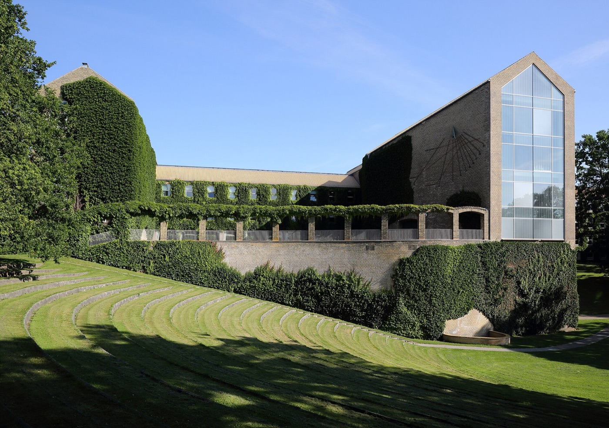

Founding and funding
The centre opened on 1 September 2000, financed by a five-year grant from the Danish National Research Foundation under the leadership of Professor Preben Bo Mortensen. Ongoing activities are primarily supported by external research grants.
Research focus
Our research centres on epidemiological studies of schizophrenia, mania, depression and suicide, drawing on the Danish registers and, increasingly, on genetic and other biological data. Gene–environment interaction is a main research topic. After more than two decades, NCRR is a world-leading centre in psychiatric epidemiology, working to bridge register-based research across the health and social sciences.
Mission and services
The centre promotes the integration of register-based research between health sciences and social sciences, and strengthens the use of register data in social-science research. By appointment, we offer advice, practical assistance and research collaboration to Danish and international colleagues.
People
NCRR counts around 60 employees whose expertise spans medicine, statistics, pharmacology, sociology and psychology. See the staff page for the full directory.
Milestones
- 2000 — The centre opens on 1 September, funded by a five-year grant from the Danish National Research Foundation.
- 2012 — CIRRAU is established at Aarhus University; the first iPSYCH grant of 121M DKK is awarded by the Lundbeck Foundation.
- 2015–2018 — Two further iPSYCH grants of 120M DKK each sustain the initiative, including the iPSYCH2012 case-cohort sample of 1,472,762 persons.
- 2016 — Professor John McGrath is awarded a 30M DKK Niels Bohr Professorship anchored at NCRR.
- 2026 — NCRR moves to the Department of Public Health (Institut for Folkesundhed), Bartholins Allé 2, bygning 1260.
